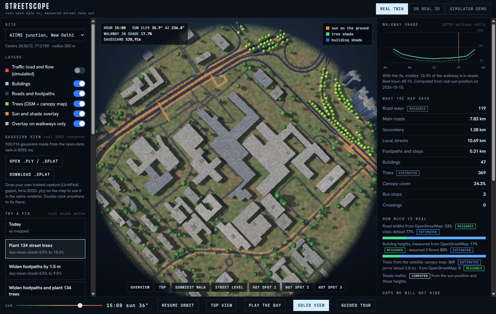

Pick any junction. Streetscope builds a 3D twin from open data, shows where people walk in the sun, screens where traffic jams, and tests fixes for both. Its AI doctor, Claude Sonnet 5.5, only quotes numbers its tools produced.

OpenStreetMap roads and buildings, the Meta and WRI canopy map, and USGS airborne LiDAR from AWS Open Data. Anywhere on Earth works; LiDAR sharpens it in the US.
Real sun position and a height grid give the share of each walkway in sun, tree shade or building shade, for every hour of the day.
Plant trees or widen footpaths and watch the shade change. Find the junctions that jam in a simulated peak hour, then try a bus lane, signal timing, an overbridge or a diversion. Every assumption is on screen.
Claude Sonnet 5.5 (through Claude Code locally, Amazon Bedrock when deployed) may only call measuring tools. A checker flags any number in its answer that no tool returned.
Every number carries a tag, so a judge can tell what was seen, what was calculated and what was assumed.
At AIIMS junction only 23% of road widths and 17% of building heights exist in OpenStreetMap. The rest are defaults, and the page lists them under Gaps we will not hide.
Tree counts from a satellite map are a lower bound. Traffic results are simulated from assumed demand, with no counts. Costs use assumed unit rates, not quotes.